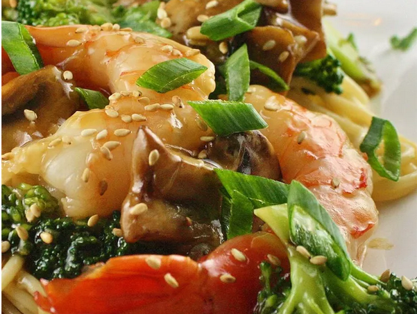

home
Shrimp with Broccoli in Garlic Sauce

Description
I wanted to recreate my favorite Chinese shrimp and broccoli takeout dish.
After several attempts, here is the result! Serve over hot cooked rice.
Ingredients
- 2 cups fresh broccoli florets
- 1 tablespoon water
- 2 tablespoons peanut oil
- 4 large cloves garlic, minced
- 1 cup low-sodium chicken broth
- 1 tablespoon soy sauce
- 1 tablespoon oyster sauce
- 2 teaspoons grated fresh ginger root
- 1 pound uncooked medium shrimp, peeled and deveined
- ¼ cup canned water chestnuts, drained
- 2 tablespoons cornstarch
Steps
-
Combine broccoli and water in a glass bowl; steam in microwave oven
until slightly tender, 2 to 3 minutes.
-
Heat peanut oil in a large skillet or wok over medium-high heat. Add
garlic and cook until fragrant, about 1 minute. Reduce heat to low. Add
chicken broth, soy sauce, oyster sauce, and ginger root to the garlic;
bring to a boil. Add shrimp; cook and stir until the shrimp turn pink, 3
to 4 minutes.
-
Toss steamed broccoli and water chestnuts with shrimp mixture to coat
with sauce. Stir cornstarch into mixture, 1 tablespoon at a time, until
sauce thickens, about 5 minutes.